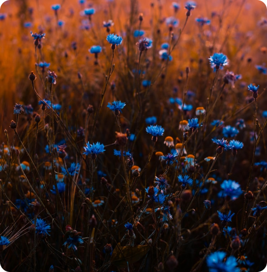
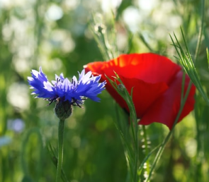
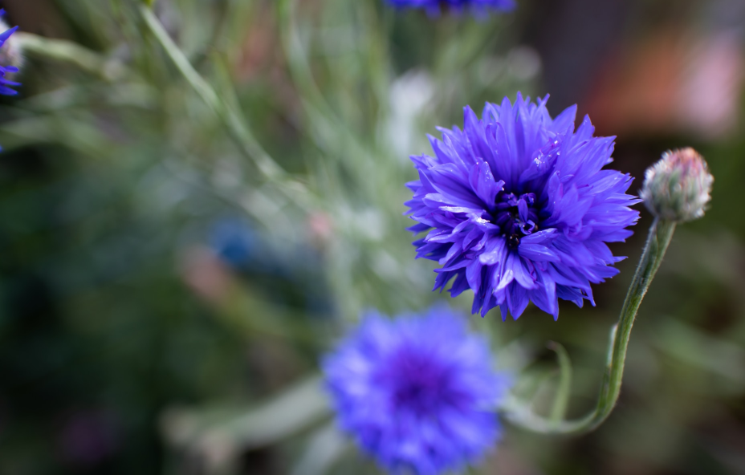
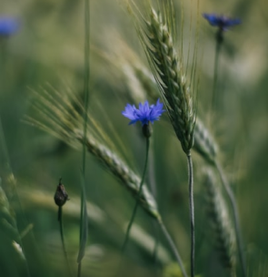

Волошки
Centaurea cyanus.
Волошки
Centaurea cyanus.
Про квітку
Одного разу закохалася русалка в молодого красивого парубка Василя. Здалеку під прикриттям очерету невідривно слідкувала вона за красенем-юнаком. Але одного разу, коли підійшов Василь до річки умитися, вона не витримала і постала перед ним у всій своїй красі. Вони покохали одне одного, і стала русалка кликати юнака у свою водну стихію, а Василь умовляв її залишитися на землі. У всьому в них було розуміння, не могли вони лише домовитись, де їм жити разом. І коли зрозуміла русалка, що не залишить Василь-хлібороб свою рідну землю, у відчаї перетворила його в скромну квітку, що росте на полях, але цвітом нагадує голубу стихію. Люди ж співчуваючи молодому хлопцю і його матері, в якої він був один, в пам´ять про нього назвали цю квітку іменем юнака – Васильком. Може через те в багатьох районах України волошку називають саме так – "васильок”.
Цікаві факти
1.Народом, який найбільше любить і цінує ці чудові рослини є німці. Багато королівських сімей любили і шанували волошки.
2.У Бельгії волошки вважаються символом свободи..
3.Має сечогінну і жовчогінну властивості.
Фото
  